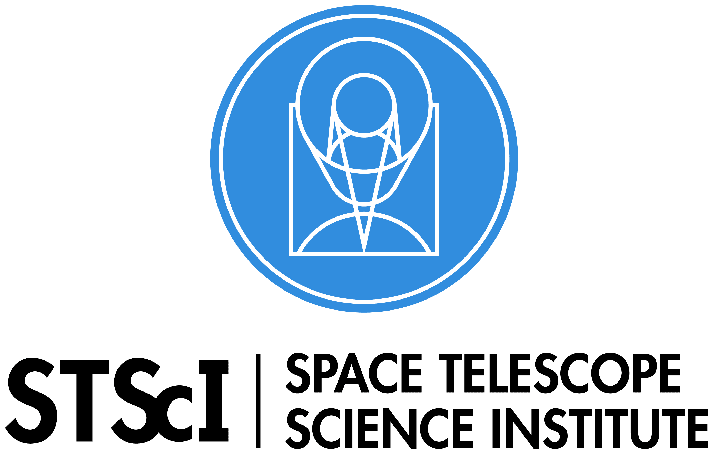
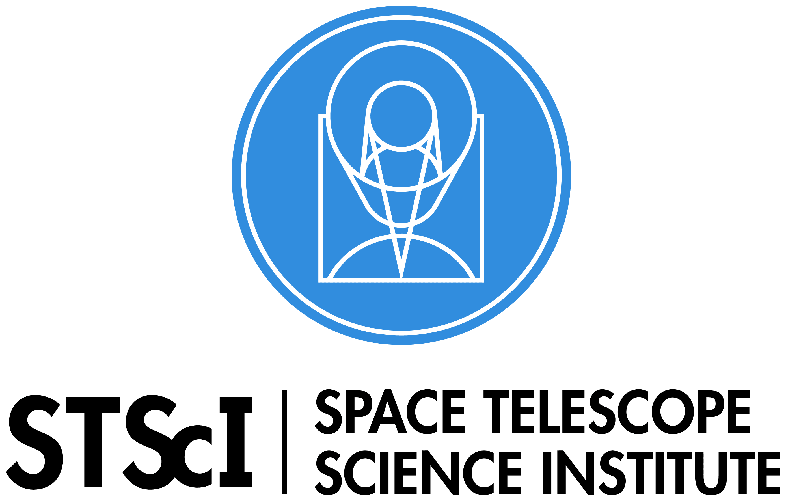

Welcome to the website for the Mad Astro Dynamics Research Group at the University of Wisconsin - Madison. We study the dynamics of galaxies through simulations, theory, and observations. On this website we have figures and movies from our research, links to publications, and biographies of our members.
News of the Month

Rachel was awarded an Early Excellence in Teaching Award in this year's Campus-Wide Teaching Assistant Awards. She was nominated for this award based on her outstanding work as a TA for Astronomy 170, "The Dark Side of the Universe: The Great Cosmic Mysteries from Black Holes to Dark Energy" in Fall 2020. Rachel developed and facilitated a variety of new group-based exercises aimed at developing community within our virtual classroom. In addition to her knowledge of educational best practices, she brought exceptional energy, enthusiasm, organization, and dedication to her work as a TA. Check out the Astronomy department announcement here, and read more about her teaching philosopy as well as the other awardees here.
Close Collaborators
| Alfonso Aguerri | IAC, Spain |
| João Alves | University of Vienna, Austria |
| Gus Beane | Harvard University, Cambridge, MA, USA |
| Bob Benjamin | UW - Whitewater, WI, USA |
| Ron Drimmel | INAF, Osservatorio Astrofisico di Torino, Italy |
| Andy Fox | Space Telescope Science Institute, Baltimore, MD, USA |
| Jay Gallagher | UW - Madison, WI, USA |
| Lars Hernquist | Harvard University, Cambridge, MA, USA |
| Eloisa Poggio | Observatoire de Nice, France |
| Bart Wakker | UW - Madison, WI, USA |
| Ellen Zweibel | UW - Madison, WI, USA |
Research Funding Sources

 
